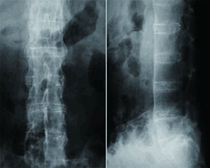

強直性脊椎炎
強直性脊椎炎とは
強直性脊椎炎は、腰や背骨（脊椎）、骨盤の関節、靭帯の付着部に炎症が起こり、進行すると骨が癒合して硬くなる自己免疫疾患（自分の免疫システムが自身の組織を攻撃してしまう病気）です。
40歳以下の男性に多いとされています。

症状
安静にすると悪化、運動すると改善する3ヶ月以上続く腰や背中の痛み（炎症性背部痛）
朝方30分以上腰がこわばる
明け方に背中の痛みで目が覚める
お尻の痛みが左右に移動する
そのほか、背中をはじめとした全身のこわばりや疲れやすさ、体重減少や微熱、アキレス腱の付け根や股関節、肩・膝・足などの関節炎、目のぶどう膜炎や炎症性腸疾患、乾癬などが同時に見られることがあります。
原因
強直性脊椎炎のはっきりとした原因はわかっていません。
特定のヒト白血球抗原（HLA-B27）と強い関連性を持つことが知られており、家族内での発生もよく見られるため、なんらかの遺伝的素因（なりやすさ）があることがわかっています。
これに後天的な要因（細菌感染など）が加わり免疫異常が生じた結果、発症すると考えられています。
診断
強直性脊椎炎を疑う場合、レントゲン写真やMRI検査を行います。
特徴的な痛みに加え、レントゲン写真で仙腸関節（骨盤の骨である仙骨と腸骨との間の関節）の変化が見られれば、強直性脊椎炎と診断することができます。
このほか、椎体の間の靭帯の骨化像が見られることがあります。
MRI検査はレントゲン写真で変化が出る前でも炎症像が見られるため、診断に有用です。
また、腰や背中の痛みが出る他の病気（椎間板ヘルニアなど）を除外することもできます。
血液検査では炎症反応の確認を行います。
さらにHLA-B27遺伝子の検査が必要です。
治療
残念ながら、現在根本的な治療法はなく、症状を和らげるための薬物療法や、リハビリテーション（物理・運動療法）が治療の主体となります。
薬物療法としては、炎症や痛みを和らげる消炎鎮痛剤が主に使用されます。
また、関節リウマチの薬として開発されたTNF阻害剤やIL-17阻害剤が強直性脊椎炎にも有効であることが近年少しずつ証明されてきています。
これらの薬は感染症などを含めた副作用が強いため、使用する場合には専門医とよく相談することが大切です。
強直性脊椎炎は特に体幹が硬くなりやすく、リハビリテーションが効果的な病気でもあります。
腰から首の可動性（動きやすさ）を保つため、療法士から指導された軽いストレッチや体操を毎日行いましょう。
ただし、力を入れすぎたストレッチやマッサージ、骨盤矯正などの矯正療法は骨折の原因となるため控えましょう。
温熱療法がよく効くこともあります。
状況に応じて手術療法を行うことがあります。
関節の破壊が進行した場合は、人工関節置換術を行います。
脊椎が固定されてしまい、歩行や日常生活に支障が出る場合は、脊椎矯正固定術などの適応となることがあります。
ただし、脊椎矯正固定術は大きな手術であり合併症の危険も高いため、主治医とよく相談する必要があります。
日常生活での注意点
喫煙は身体全体の炎症を引き起こし症状を悪化させるため禁煙する
首や胸郭を動かすストレッチを毎日行う
猫背にならないよう、背筋を伸ばす
骨の病気が進行した場合、ほんの少しの怪我でも骨折してしまうことがあるため、格闘技（相撲やレスリング、柔道など）やコンタクトスポーツ（ラグビーなど）は控える
参考文献
https://www.joa.or.jp/public/sick/condition/ankylosing_spondylitis.html
https://www.msdmanuals.com/ja-jp/プロフェッショナル/06-筋骨格系疾患と結合組織疾患/関節疾患/強直性脊椎炎
https://a-connect.abbvie.co.jp/-/media/assets/pdf/products/humira_rheum/patients_support/1806_sekitsui.pdf
https://www.nanbyou.or.jp/entry/4848
https://www.nanbyou.or.jp/entry/4847
https://www.juntendo.ac.jp/hospital/clinic/kogen/patient/disease/disease04.html
http://www.imed3.med.osaka-u.ac.jp/disease/d-immu03-2.html
https://clinicalsup.jp/jpoc/ContentPage.aspx?DiseaseID=424